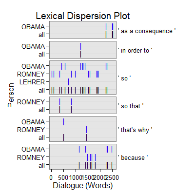

dc_causality(text.var, grouping.var, n.before = 1, tot = FALSE, n.after = n.before, ord.inds = TRUE, markup = c("<<", ">>"), name = "causality", ...)dc_causality_sub(text.var, grouping.var, n.before = 1, tot = FALSE, n.after = n.before, ord.inds = TRUE, markup = c("<<", ">>"), name = "causality_sub", ...)
TRUE condenses sub-units (e.g., sentences)
into turns of talk for that grouping.var.TRUE inds is ordered least to greatest.c("", "") to not mark the causality discourse
markers.termco.dc_causality - Returns returns a list of 2:
countsA termco object of causality discourse connector counts.
causalityA trans_context object of causality discourse connectors in context.
dc_causality_sub - Returns returns a list of 2:
countsA termco object of causality discourse connector counts.
continuationA trans_context object of continuation causality discourse connectors in context.
elaborationA trans_context object of elaboration causality discourse connectors in context.
dc_causality - Extract causality discourse connectors in context.
dc_causality - Extract causality discourse connectors in context typified as
continuation or elaboration.
Alemany, L. A. (2005). Representing discourse for automatic text summarization via shallow NLP techniques (Unpublished doctoral dissertation). Universitat de Barcelona, Barcelona.
http://russell.famaf.unc.edu.ar/~laura/shallowdisc4summ/discmar
with(pres_debates2012[1:200, ], dc_causality(dialogue, person))$counts person word.count causality 1 OBAMA 943 18(1.91%) 2 ROMNEY 1349 17(1.26%) 3 LEHRER 316 1(.32%) $causality =================================== Event 1: [lines 5-7] LEHRER: And what about the vouchers? ** ROMNEY: <<So that>>'s that's number one. ROMNEY: Number two is for people coming along that are young, what I do to make sure that we can keep Medicare in place for them is to allow them either to choose the current Medicare program or a private plan. =================================== Event 2: [lines 9-11] ROMNEY: They get to choose and they'll have at least two plans that will be entirely at no cost to them. ** ROMNEY: <<So>> they don't have to pay additional money, no additional dollar six thousand. ROMNEY: That's not going to happen. =================================== Event 3: [lines 23-25] ROMNEY: And, by the way the idea came not even from Paul Ryan or or Senator Wyden, who's the co author of the bill with with Paul Ryan in the Senate, but also it came from Bill Bill Clinton's chief of staff. ** ROMNEY: This is an idea that's been around a long time, which is saying, hey, let's see if we can't get competition into the Medicare world <<so that>> people can get the choice of different plans at lower cost, better quality. ROMNEY: I believe in competition. =================================== Event 4: [lines 29-31] OBAMA: That's what they do. ** OBAMA: And <<so>> you've got higher administrative costs, plus profit on top of that. OBAMA: And if you are going to save any money through what Governor Romney's proposing, what has to happen is, is that the money has to come from somewhere. =================================== Event 5: [lines 34-36] OBAMA: And this is the reason why AARP has said that your plan would weaken Medicare substantially. ** OBAMA: And <<that's why>> they were supportive of the approach that we took. OBAMA: One last point I want to make. =================================== Event 6: [lines 40-42] LEHRER: OK. ** OBAMA: And <<so>>| ROMNEY: That's that's a big topic. =================================== Event 7: [lines 62-64] LEHRER: All right. ** LEHRER: <<So>> to finish quickly, briefly, on the economy, what is your view about the level of federal regulation of the economy right now? LEHRER: Is there too much? =================================== Event 8: [lines 73-75] ROMNEY: You couldn't have people opening up banks in their in their garage and making loans. ** ROMNEY: I mean, you have to have regulations <<so that>> you can have an economy work. ROMNEY: Every free economy has good regulation. =================================== Event 9: [lines 89-91] ROMNEY: There've been one hundred twenty two community and small banks have closed since Dodd Frank. ** ROMNEY: <<So>> there's one example. ROMNEY: Here's another. =================================== Event 10: [lines 106-108] OBAMA: Now, it wasn't just on Wall Street. ** OBAMA: You had loan officers were that were giving loans and mortgages that really shouldn't have been given, <<because>> the folks didn't qualify. OBAMA: You had people who were borrowing money to buy a house that they couldn't afford. =================================== Event 11: [lines 109-111] OBAMA: You had credit agencies that were stamping these as Aone great investments when they weren't. ** OBAMA: But you also had banks making money hand over fist, churning out products that the bankers themselves didn't even understand, <<in order to>> make big profits, but knowing that it made the entire system vulnerable. OBAMA: So what did we do? =================================== Event 12: [lines 110-112] OBAMA: But you also had banks making money hand over fist, churning out products that the bankers themselves didn't even understand, in order to make big profits, but knowing that it made the entire system vulnerable. ** OBAMA: <<So>> what did we do? OBAMA: We stepped in and had the toughest reforms on Wall Street since the one thousand nine hundred thirtys. =================================== Event 13: [lines 114-116] OBAMA: You can't engage in some of this risky behavior that is putting Main Street at risk. ** OBAMA: We've going to make sure that you've got to have a living will <<so>> <<so>> we can know how you're going to wind things down if you make a bad bet <<so>> we don't have other taxpayer bailouts. OBAMA: In the meantime, by the way, we also made sure that all the help that we provided those banks was paid back every single dime, with interest. =================================== Event 14: [lines 119-121] OBAMA: But in the past, Governor Romney has said he just want to repeal Dodd Frank, roll it back. ** OBAMA: And <<so>> the question is: Does anybody out there think that the big problem we had is that there was too much oversight and regulation of Wall Street? OBAMA: Because if you do, then Governor Romney is your candidate. =================================== Event 15: [lines 120-122] OBAMA: And so the question is: Does anybody out there think that the big problem we had is that there was too much oversight and regulation of Wall Street? ** OBAMA: <<Because>> if you do, then Governor Romney is your candidate. OBAMA: But that's not what I believe. =================================== Event 16: [lines 124-126] ROMNEY: Look, we have to have regulation on Wall Street. ** ROMNEY: <<That's why>> I'd have regulation. ROMNEY: But I wouldn't designate five banks as too big to fail and give them a blank check. =================================== Event 17: [lines 128-130] ROMNEY: It wasn't thought through properly. ** ROMNEY: We need to get rid of that provision <<because>> it's killing regional and small banks. ROMNEY: They're getting hurt. =================================== Event 18: [lines 134-136] ROMNEY: It's one of the reasons for the great financial calamity we had. ** ROMNEY: And <<so>> Dodd Frank correctly says we need to have qualified mortgages, and if you give a mortgage that's not qualified, there are big penalties, except they didn't ever go on and define what a qualified mortgage was. ROMNEY: It's been two years. =================================== Event 19: [lines 137-139] ROMNEY: We don't know what a qualified mortgage is yet. ** ROMNEY: <<So>> banks are reluctant to make loans, mortgages. ROMNEY: Try and get a mortgage these days. =================================== Event 20: [lines 139-141] ROMNEY: Try and get a mortgage these days. ** ROMNEY: It's hurt the housing market <<because>> Dodd Frank didn't anticipate putting in place the kinds of regulations you have to have. ROMNEY: It's not that Dodd Frank always was wrong with too much regulation. =================================== Event 21: [lines 142-144] ROMNEY: Sometimes they didn't come out with a clear regulation. ** ROMNEY: I will make sure we don't hurt the functioning of our of our marketplace and our business, <<because>> I want to bring back housing and get good jobs. LEHRER: All right. =================================== Event 22: [lines 156-158] ROMNEY: I met a couple in Appleton, Wisconsin, and they said, we're thinking of dropping our insurance, we can't afford it. ** ROMNEY: And the number of small businesses I've gone to that are saying they're dropping insurance <<because>> they can't afford it, the cost of health care is just prohibitive. ROMNEY: And and we've got to deal with cost. =================================== Event 23: [lines 159-161] ROMNEY: And, unfortunately, when when when you look at Obamacare, the Congressional Budget Office has said it will cost dollar two thousand five hundred a year more than traditional insurance. ** ROMNEY: <<So>> it's adding to cost. ROMNEY: And as a matter of fact, when the president ran for office, he said that, by this year, he would have brought down the cost of insurance for each family by dollar two thousand five hundred a family. =================================== Event 24: [lines 162-164] ROMNEY: Instead, it's gone up by that amount. ** ROMNEY: <<So>> it's expensive. ROMNEY: Expensive things hurt families. =================================== Event 25: [lines 164-166] ROMNEY: Expensive things hurt families. ** ROMNEY: <<So that>>'s one reason I don't want it. ROMNEY: Second reason, it cuts dollar seven hundred sixteen billion from Medicare to pay for it. =================================== Event 26: [lines 181-183] OBAMA: If they did have coverage, insurance companies might impose an arbitrary limit. ** OBAMA: And <<so>> <<as a consequence>>, they're paying their premiums, somebody gets really sick, lo and behold, they don't have enough money to pay the bills, <<because>> the insurance companies say that they've hit the limit. OBAMA: So we did work on this, alongside working on jobs, because this is part of making sure that middle class families are secure in this country. =================================== Event 27: [lines 182-184] OBAMA: And so as a consequence, they're paying their premiums, somebody gets really sick, lo and behold, they don't have enough money to pay the bills, because the insurance companies say that they've hit the limit. ** OBAMA: <<So>> we did work on this, alongside working on jobs, <<because>> this is part of making sure that middle class families are secure in this country. OBAMA: And let me tell you exactly what Obamacare did. =================================== Event 28: [lines 194-196] LEHRER: Two minutes two minutes is up, sir. ** OBAMA: No, I think I had five seconds before you interrupted me, was the irony is that we've seen this model work really well in Massachusetts, <<because>> Governor Romney did a good thing, working with Democrats in the state to set up what is essentially the identical model and <<as a consequence>> people are covered there. OBAMA: It hasn't destroyed jobs. =================================== Event 29: [lines 196-198] OBAMA: It hasn't destroyed jobs. ** OBAMA: And <<as a consequence>>, we now have a system in which we have the opportunity to start bringing down costs, as opposed to just leaving millions of people out in the cold. LEHRER: Your five seconds went away a long time ago.out <- with(pres_debates2012[1:200, ], dc_causality_sub(dialogue, person)) out[1]$counts person word.count continuation elaboration 1 OBAMA 943 13(1.38%) 5(.53%) 2 ROMNEY 1349 13(.96%) 4(.30%) 3 LEHRER 316 1(.32%) 0out[2]$continuation =================================== Event 1: [lines 5-7] LEHRER: And what about the vouchers? ** ROMNEY: <<So that>>'s that's number one. ROMNEY: Number two is for people coming along that are young, what I do to make sure that we can keep Medicare in place for them is to allow them either to choose the current Medicare program or a private plan. =================================== Event 2: [lines 9-11] ROMNEY: They get to choose and they'll have at least two plans that will be entirely at no cost to them. ** ROMNEY: <<So>> they don't have to pay additional money, no additional dollar six thousand. ROMNEY: That's not going to happen. =================================== Event 3: [lines 23-25] ROMNEY: And, by the way the idea came not even from Paul Ryan or or Senator Wyden, who's the co author of the bill with with Paul Ryan in the Senate, but also it came from Bill Bill Clinton's chief of staff. ** ROMNEY: This is an idea that's been around a long time, which is saying, hey, let's see if we can't get competition into the Medicare world <<so that>> people can get the choice of different plans at lower cost, better quality. ROMNEY: I believe in competition. =================================== Event 4: [lines 29-31] OBAMA: That's what they do. ** OBAMA: And <<so>> you've got higher administrative costs, plus profit on top of that. OBAMA: And if you are going to save any money through what Governor Romney's proposing, what has to happen is, is that the money has to come from somewhere. =================================== Event 5: [lines 34-36] OBAMA: And this is the reason why AARP has said that your plan would weaken Medicare substantially. ** OBAMA: And <<that's why>> they were supportive of the approach that we took. OBAMA: One last point I want to make. =================================== Event 6: [lines 40-42] LEHRER: OK. ** OBAMA: And <<so>>| ROMNEY: That's that's a big topic. =================================== Event 7: [lines 62-64] LEHRER: All right. ** LEHRER: <<So>> to finish quickly, briefly, on the economy, what is your view about the level of federal regulation of the economy right now? LEHRER: Is there too much? =================================== Event 8: [lines 73-75] ROMNEY: You couldn't have people opening up banks in their in their garage and making loans. ** ROMNEY: I mean, you have to have regulations <<so that>> you can have an economy work. ROMNEY: Every free economy has good regulation. =================================== Event 9: [lines 89-91] ROMNEY: There've been one hundred twenty two community and small banks have closed since Dodd Frank. ** ROMNEY: <<So>> there's one example. ROMNEY: Here's another. =================================== Event 10: [lines 109-111] OBAMA: You had credit agencies that were stamping these as Aone great investments when they weren't. ** OBAMA: But you also had banks making money hand over fist, churning out products that the bankers themselves didn't even understand, <<in order to>> make big profits, but knowing that it made the entire system vulnerable. OBAMA: So what did we do? =================================== Event 11: [lines 110-112] OBAMA: But you also had banks making money hand over fist, churning out products that the bankers themselves didn't even understand, in order to make big profits, but knowing that it made the entire system vulnerable. ** OBAMA: <<So>> what did we do? OBAMA: We stepped in and had the toughest reforms on Wall Street since the one thousand nine hundred thirtys. =================================== Event 12: [lines 114-116] OBAMA: You can't engage in some of this risky behavior that is putting Main Street at risk. ** OBAMA: We've going to make sure that you've got to have a living will <<so>> <<so>> we can know how you're going to wind things down if you make a bad bet <<so>> we don't have other taxpayer bailouts. OBAMA: In the meantime, by the way, we also made sure that all the help that we provided those banks was paid back every single dime, with interest. =================================== Event 13: [lines 119-121] OBAMA: But in the past, Governor Romney has said he just want to repeal Dodd Frank, roll it back. ** OBAMA: And <<so>> the question is: Does anybody out there think that the big problem we had is that there was too much oversight and regulation of Wall Street? OBAMA: Because if you do, then Governor Romney is your candidate. =================================== Event 14: [lines 124-126] ROMNEY: Look, we have to have regulation on Wall Street. ** ROMNEY: <<That's why>> I'd have regulation. ROMNEY: But I wouldn't designate five banks as too big to fail and give them a blank check. =================================== Event 15: [lines 134-136] ROMNEY: It's one of the reasons for the great financial calamity we had. ** ROMNEY: And <<so>> Dodd Frank correctly says we need to have qualified mortgages, and if you give a mortgage that's not qualified, there are big penalties, except they didn't ever go on and define what a qualified mortgage was. ROMNEY: It's been two years. =================================== Event 16: [lines 137-139] ROMNEY: We don't know what a qualified mortgage is yet. ** ROMNEY: <<So>> banks are reluctant to make loans, mortgages. ROMNEY: Try and get a mortgage these days. =================================== Event 17: [lines 159-161] ROMNEY: And, unfortunately, when when when you look at Obamacare, the Congressional Budget Office has said it will cost dollar two thousand five hundred a year more than traditional insurance. ** ROMNEY: <<So>> it's adding to cost. ROMNEY: And as a matter of fact, when the president ran for office, he said that, by this year, he would have brought down the cost of insurance for each family by dollar two thousand five hundred a family. =================================== Event 18: [lines 162-164] ROMNEY: Instead, it's gone up by that amount. ** ROMNEY: <<So>> it's expensive. ROMNEY: Expensive things hurt families. =================================== Event 19: [lines 164-166] ROMNEY: Expensive things hurt families. ** ROMNEY: <<So that>>'s one reason I don't want it. ROMNEY: Second reason, it cuts dollar seven hundred sixteen billion from Medicare to pay for it. =================================== Event 20: [lines 181-183] OBAMA: If they did have coverage, insurance companies might impose an arbitrary limit. ** OBAMA: And <<so>> <<as a consequence>>, they're paying their premiums, somebody gets really sick, lo and behold, they don't have enough money to pay the bills, because the insurance companies say that they've hit the limit. OBAMA: So we did work on this, alongside working on jobs, because this is part of making sure that middle class families are secure in this country. =================================== Event 21: [lines 182-184] OBAMA: And so as a consequence, they're paying their premiums, somebody gets really sick, lo and behold, they don't have enough money to pay the bills, because the insurance companies say that they've hit the limit. ** OBAMA: <<So>> we did work on this, alongside working on jobs, because this is part of making sure that middle class families are secure in this country. OBAMA: And let me tell you exactly what Obamacare did. =================================== Event 22: [lines 194-196] LEHRER: Two minutes two minutes is up, sir. ** OBAMA: No, I think I had five seconds before you interrupted me, was the irony is that we've seen this model work really well in Massachusetts, because Governor Romney did a good thing, working with Democrats in the state to set up what is essentially the identical model and <<as a consequence>> people are covered there. OBAMA: It hasn't destroyed jobs. =================================== Event 23: [lines 196-198] OBAMA: It hasn't destroyed jobs. ** OBAMA: And <<as a consequence>>, we now have a system in which we have the opportunity to start bringing down costs, as opposed to just leaving millions of people out in the cold. LEHRER: Your five seconds went away a long time ago.out[3]$elaboration =================================== Event 1: [lines 106-108] OBAMA: Now, it wasn't just on Wall Street. ** OBAMA: You had loan officers were that were giving loans and mortgages that really shouldn't have been given, <<because>> the folks didn't qualify. OBAMA: You had people who were borrowing money to buy a house that they couldn't afford. =================================== Event 2: [lines 120-122] OBAMA: And so the question is: Does anybody out there think that the big problem we had is that there was too much oversight and regulation of Wall Street? ** OBAMA: <<Because>> if you do, then Governor Romney is your candidate. OBAMA: But that's not what I believe. =================================== Event 3: [lines 128-130] ROMNEY: It wasn't thought through properly. ** ROMNEY: We need to get rid of that provision <<because>> it's killing regional and small banks. ROMNEY: They're getting hurt. =================================== Event 4: [lines 139-141] ROMNEY: Try and get a mortgage these days. ** ROMNEY: It's hurt the housing market <<because>> Dodd Frank didn't anticipate putting in place the kinds of regulations you have to have. ROMNEY: It's not that Dodd Frank always was wrong with too much regulation. =================================== Event 5: [lines 142-144] ROMNEY: Sometimes they didn't come out with a clear regulation. ** ROMNEY: I will make sure we don't hurt the functioning of our of our marketplace and our business, <<because>> I want to bring back housing and get good jobs. LEHRER: All right. =================================== Event 6: [lines 156-158] ROMNEY: I met a couple in Appleton, Wisconsin, and they said, we're thinking of dropping our insurance, we can't afford it. ** ROMNEY: And the number of small businesses I've gone to that are saying they're dropping insurance <<because>> they can't afford it, the cost of health care is just prohibitive. ROMNEY: And and we've got to deal with cost. =================================== Event 7: [lines 181-183] OBAMA: If they did have coverage, insurance companies might impose an arbitrary limit. ** OBAMA: And so as a consequence, they're paying their premiums, somebody gets really sick, lo and behold, they don't have enough money to pay the bills, <<because>> the insurance companies say that they've hit the limit. OBAMA: So we did work on this, alongside working on jobs, because this is part of making sure that middle class families are secure in this country. =================================== Event 8: [lines 182-184] OBAMA: And so as a consequence, they're paying their premiums, somebody gets really sick, lo and behold, they don't have enough money to pay the bills, because the insurance companies say that they've hit the limit. ** OBAMA: So we did work on this, alongside working on jobs, <<because>> this is part of making sure that middle class families are secure in this country. OBAMA: And let me tell you exactly what Obamacare did. =================================== Event 9: [lines 194-196] LEHRER: Two minutes two minutes is up, sir. ** OBAMA: No, I think I had five seconds before you interrupted me, was the irony is that we've seen this model work really well in Massachusetts, <<because>> Governor Romney did a good thing, working with Democrats in the state to set up what is essentially the identical model and as a consequence people are covered there. OBAMA: It hasn't destroyed jobs.plot(out)
## Save externally use .doc or .txt ## print(out[[2]], file="elaboration_causality.doc")